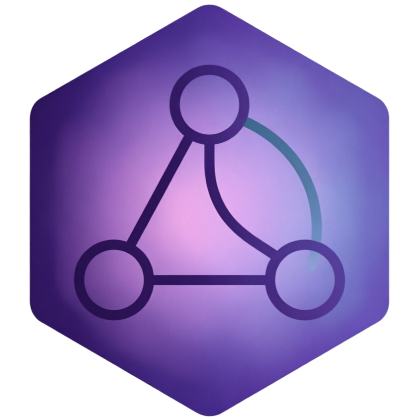

Universal contracts
normalizeInput() and normalizeResult() define a stable API surface. Any product module receives the same shape and returns a consistent result envelope.

Glyph Metadata Intelligence
glyph-mi
Universal metadata intelligence core with product-specific modules. Senza stays fully supported; Cultiva foundation is prepared for the next generation of Glyph integrations.
From Senza-specific pipeline to a universal core with pluggable product modules — without breaking existing integrations.
normalizeInput() and normalizeResult() define a stable API surface. Any product module receives the same shape and returns a consistent result envelope.
analyzeUniversal(input, { moduleId }) routes to the right handler. Unknown modules fall back to the default Senza analyzer with a hint in the response.
Full Senza pipeline — tags, metadata, spectral analysis, kNN, local agent — wrapped as module-senza with zero behavior change for existing callers.
Scaffold module and knowledge pack placeholder for future Cultiva product integration. Manifest, handler stub, and cultiva-foundation-v1.json ready for extension.
Product-agnostic core with module adapters on top of the existing analysis pipeline.
Each module has a manifest, handler, and optional knowledge pack.
Music library metadata intelligence for Senza. Capabilities: tags, metadata, spectral analysis, kNN neighbors, local agent hints. Enabled by default.
Placeholder for Cultiva product integration. Manifest and handler scaffold in place; knowledge pack at knowledge/public/cultiva-foundation-v1.json.
JavaScript universal entry and Python CLI for batch analysis.
Primary consumer. Full pipeline with spectral features, kNN tag propagation, and local agent integration.
Obsidian plugin with simplified extractive summaries and tag scoring. Shares design principles, lighter runtime.
Use analyzeUniversal() with your own moduleId or extend the module registry for new products.
Search and metadata intelligence, built to work together.